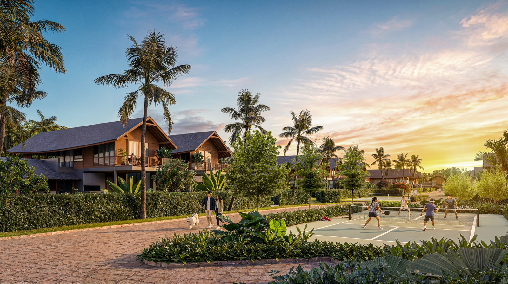

5 Cấu Phần Giá Trị Đỉnh Cao Trong 1m² Tại Saigon Farm Resort:
- 1. Đất 100% thổ cư, sổ đỏ riêng từng lô: Nhận đất công chứng sang tên ngay, triệt tiêu hoàn toàn 3 loại chi phí ngầm (chi phí chờ đợi, chi phí chuyển đổi và chi phí rủi ro pháp lý).
- 2. 521m² diện tích tiện ích đi kèm mỗi sản phẩm: Khu tiện ích trung tâm 24.488 m² phục vụ giới hạn chỉ 47 chủ nhân (tỷ lệ không gian chung đạt tới 37,6% tổng quy hoạch).
- 3. Hệ tiện ích thể thao All-Weather & nghỉ dưỡng đa tầng: Sân Pickleball & Bóng rổ có mái che 24/7, 2 hồ bơi khoáng muối, bến thuyền SUP/Kayak, câu lạc bộ cưỡi ngựa 6.800m², nhà hàng 250 chỗ, nông trại hữu cơ, đầm sen.
- 4. Dịch vụ Quản gia & Bảo vệ 24/7, Vận hành cho thuê nhận dòng tiền hàng tháng: Quản lý vận hành theo tiêu chuẩn resort cao cấp bởi MDS Living, biến điền trang thành cỗ máy sinh lời tự động thảnh thơi.
- 5. Bối cảnh tự nhiên không tái tạo được: Mặt hồ sinh thái 100ha, ba mặt giáp đồng lúa và vườn dừa nguyên bản, không khói bụi khu công nghiệp và không bị phá vỡ quy hoạch.

Sơ đồ quy hoạch phân bổ 24.488 m² tiện ích trung tâm — Bình quân mỗi căn điền trang được sở hữu quyền sử dụng 521 m² tiện ích chung.
1. Câu Hỏi Đặt Sai: 'Bao Nhiêu Một Mét Vuông?'
Khi xem một sản phẩm bất động sản, câu hỏi đầu tiên gần như luôn là 'bao nhiêu một mét vuông'. Đó là câu hỏi tự nhiên theo thói quen so sánh của thị trường, nhưng nó không trả lời được điều quan trọng hơn.
Một mét vuông ở một khu đất phân lô tự do ven đô và một mét vuông ở Saigon Farm Resort là hai thứ hoàn toàn khác nhau về bản chất:
- Ở một khu phân lô tự phát: Bạn mua đúng 1m² đất trống nằm lọt thỏm giữa đường đất lầy lội, không hạ tầng thoát nước, không cây xanh, không tiện ích, và xung quanh có thể biến thành xưởng cơ khí hay bãi rác bất cứ lúc nào.
- Ở Saigon Farm Resort: 1m² đất của bạn nằm trong một hệ sinh thái nghỉ dưỡng hoàn chỉnh 6,52 ha, được bao bọc bởi hồ nước 100ha, bảo vệ an ninh 24/7, có dịch vụ quản gia chăm sóc tận tay, và sở hữu kèm theo quyền sử dụng hàng chục nghìn mét vuông tiện ích đẳng cấp.
Cùng một con số, nhưng thứ nhận về hoàn toàn không giống nhau. Vậy nên câu hỏi đúng phải là: Một mét vuông ở đây mua được những gì?
2. Thành Phần Thứ Nhất — Đất, Và Tình Trạng Pháp Lý Hoàn Chỉnh
Toàn bộ sản phẩm tại Saigon Farm Resort là đất 100% thổ cư (đất ở lâu dài), sổ đỏ riêng từng lô. Khách ký hợp đồng hôm nay, công chứng sang tên ngay, nhận đất và khởi công xây dựng bất cứ lúc nào.
Điều này nghe có vẻ hiển nhiên, nhưng trong thực tế đầu tư bất động sản vùng ven, nó loại bỏ triệt để 3 loại chi phí khổng lồ mà người mua đất tự do thường phải gánh chịu mà ít khi tính vào giá ban đầu:
1. Chi phí chờ đợi (Thời gian là tiền bạc): Đất nông nghiệp chờ chuyển đổi mục đích sử dụng có thể mất 3 - 5 năm, không thể khai thác, không thể xây dựng, và mất đi chi phí cơ hội đầu tư.
2. Chi phí chuyển đổi (Tiền sử dụng đất thực tế): Nghĩa vụ tài chính nộp tiền sử dụng đất khi chuyển từ đất trồng cây lâu năm sang đất ở nông thôn theo bảng giá đất mới là một khoản tiền thật rất lớn, có thể chiếm từ 30% đến 50% giá trị mảnh đất.
3. Chi phí rủi ro (Rủi ro quy hoạch & treo sổ): Đất chưa có sổ riêng luôn mang một xác suất không bao giờ hoàn tất được thủ tục pháp lý.
Tại Saigon Farm Resort, cả 3 khoản chi phí ngầm này bằng KHÔNG. Người mua trả tiền cho một tài sản đã hoàn chỉnh pháp lý 100% ngay tại thời điểm đặt bút ký.
3. Thành Phần Thứ Hai — 521 Mét Vuông Tiện Ích Đi Kèm Mỗi Sản Phẩm
Đây là con số kinh tế học quan trọng nhất phản ánh đẳng cấp khác biệt của Saigon Farm Resort.
Khu tiện ích trung tâm của khu điền trang rộng tới 24.488 m², nhưng chỉ phục vụ duy nhất đúng 47 chủ nhân. Chia trung bình, mỗi sản phẩm điền trang được hưởng trọn 521 m² diện tích tiện ích.
Gần bốn phần mười diện tích khu điền trang Chủ đầu tư không bán đất thu tiền, mà giữ lại làm không gian chung cho cộng đồng.
3 Chỉ Tiêu Tự Ràng Buộc Khắt Khe Của Chủ Đầu Tư:
- Mật độ xây dựng gộp ≤ 20%: Cứ 10 phần đất thì 8 phần vẫn là cây xanh, mặt nước và khoảng trống sinh thái.
- Cây xanh và mặt nước ≥ 55%: Chiếm hơn một nửa diện tích khu tiện ích trung tâm.
- Bán kính tối đa 300m: Từ nhà chung tới mọi phân khu chức năng (bến thuyền, sân thể thao, khu ngựa, đầm sen).
4. Thành Phần Thứ Ba — Hệ Tiện Ích Đa Tầng Không Thể Mua Lẻ Bằng Tiền
Có một loại giá trị mà dù có nhiều tiền đến đâu, một cá nhân đơn lẻ cũng không thể tự tạo ra trên mảnh đất của riêng mình:

Sân Pickleball & Bóng rổ có mái che All-Weather

Hồ bơi vô cực & Bến thuyền Kayak ven hồ 100ha
5. Thành Phần Thứ Tư — Dịch Vụ Quản Gia, Bảo Vệ 24/7 & Cỗ Máy Sinh Dòng Tiền Thụ Động Hàng Tháng
Nỗi e ngại lớn nhất của người mua biệt thự nghỉ dưỡng vùng ven là 'nỗi khổ chăm nhà': Nhà ở xa không ai trông nom dễ xuống cấp, sân vườn cỏ dại mọc um tùm, thiết bị hư hỏng, mỗi lần về nghỉ dưỡng phải mất trọn một ngày để lau chùi dọn dẹp thay vì được thư giãn.
Tại Saigon Farm Resort, đơn vị quản lý vận hành chuyên nghiệp MDS Living giải quyết triệt để bài toán này bằng hệ thống dịch vụ tiêu chuẩn resort 5 sao quốc tế:
🎩 1. Dịch Vụ Quản Gia Riêng (Private Butler) & Bảo Vệ An Ninh Đa Lớp 24/7
- Chăm sóc ngôi nhà 365 ngày: Đội ngũ quản gia thay gia chủ cắt tỉa sân vườn, tưới cây, kiểm tra bảo dưỡng hệ thống điện nước, lau chùi nội thất định kỳ. Căn nhà luôn trong trạng thái hoàn hảo, tinh tươm như mới.
- Chuẩn bị trước khi gia chủ về (Pre-Arrival Service): Bật điều hòa mát rượi, xông tinh dầu thảo mộc sả chanh thư thái, cắm hoa tươi thơm ngát và chuẩn bị sẵn giỏ thực phẩm hữu cơ 'Farm-to-Table' tươi rói từ nông trại. Gia chủ chỉ cần xách vali về và tận hưởng kỳ nghỉ trọn vẹn.
- An ninh khép kín 24/7: Trạm gác an ninh cổng chính, ca-nô tuần tra mặt nước hồ 100ha, hệ thống camera AI hồng ngoại dọc các tuyến đường, đảm bảo sự an toàn và riêng tư tuyệt đối cho gia đình.
💰 2. Ủy Thác Vận Hành Cho Thuê — Nhận Dòng Tiền Thụ Động Hàng Tháng
Khi không có nhu cầu sử dụng, gia chủ có thể bàn giao căn biệt thự điền trang vào Chương trình Khai thác cho thuê phòng nghỉ dưỡng cao cấp của MDS Living:
- Dòng tiền đều đặn hàng tháng: Nhận báo cáo doanh thu và chuyển khoản lợi nhuận cho thuê minh bạch mỗi tháng, biến bất động sản thành cỗ máy in tiền thụ động mà không tốn công sức quản lý.
- Tỷ lệ lấp đầy vượt trội: Nhờ hệ tiện ích độc bản (Việt Mã Viên, hồ 100ha, Pickleball mái che, văn hóa Truly Việt, chỉ 30 phút từ Sân bay Long Thành và 15 phút tới Casino Hồ Tràm), khu nghỉ dưỡng luôn đạt tỷ suất khai thác cao từ dòng khách quốc tế, chuyên gia và giới thượng lưu.
- Tặng đêm nghỉ dưỡng miễn phí: Gia chủ vẫn được tận hưởng các kỳ nghỉ miễn phí hàng năm cùng quyền ưu tiên đặt chỗ và giảm giá dịch vụ ẩm thực, spa trên toàn hệ thống.
6. Thành Phần Thứ Năm — Vị Trí & Bối Cảnh Không Tái Tạo Được
Đất có thể mua thêm. Tiện ích có thể xây thêm. Dịch vụ có thể thuê thêm. Nhưng bối cảnh thiên nhiên xung quanh thì vĩnh viễn không thể tái tạo bằng tiền.
Saigon Farm Resort tọa lạc bên mặt hồ sinh thái 100ha tự nhiên, ba mặt ôm trọn bởi cánh đồng lúa hữu cơ xanh ngút ngàn và những rặng dừa thơ mộng, trong vùng vi khí hậu ven biển trong lành. Không có nhà cao tầng che khuất tầm nhìn, không có khói bụi của các khu công nghiệp nặng.
Với sản phẩm bất động sản nghỉ dưỡng cao cấp, thứ quyết định giá trị lâu dài chính là cảnh quan xung quanh hàng rào, chứ không phải chỉ là những thứ bên trong hàng rào. Một căn biệt thự lộng lẫy triệu đô nhìn ra một nhà máy xả khói thì vẫn chỉ là một căn nhà nhìn ra nhà máy. Mặt hồ 100ha, cánh đồng lúa và khoảng cách 15 phút tới biển Hồ Tràm là những báu vật tự nhiên đã có sẵn từ ngàn đời và sẽ trường tồn cùng thời gian.

Bối cảnh sinh thái tự nhiên bao quanh điền trang — Báu vật cảnh quan không thể tái tạo bằng bất cứ giá nào.
7. Bài Toán Hiệu Quả Đầu Tư: So Sánh Chi Phí Thay Thế (Replacement Cost)
Gộp cả 5 thành phần trên lại, một mét vuông tại Saigon Farm Resort bao gồm:
- Đất thổ cư 100% hoàn chỉnh pháp lý, công chứng sang tên và sử dụng ngay.
- Quyền sở hữu và sử dụng 521 m² tiện ích chung được chăm sóc mỗi ngày.
- Quyền tiếp cận toàn bộ hệ tiện ích thượng lưu không thể tự tạo (sân Pickleball/Bóng rổ mái che, 2 hồ bơi điện phân muối, khu ngựa, nhà hàng, nông trại, bến thuyền SUP/Kayak, spa).
- Dịch vụ quản gia riêng & an ninh 24/7 cùng dòng tiền cho thuê nhận đều đặn hàng tháng.
- Một bối cảnh sinh thái mặt hồ 100ha không thể tái tạo.
Cách kiểm tra tính hợp lý của giá trị bất động sản chuẩn xác nhất của giới đầu tư quốc tế là So Sánh Chi Phí Thay Thế (Replacement Cost): Nếu một gia đình muốn tự tạo ra một trải nghiệm sống tương đương, họ phải bỏ ra bao nhiêu?
Họ sẽ phải mua một quỹ đất rộng hàng chục nghìn mét vuông. Phải tự bỏ hàng chục tỷ làm đường sá, trạm điện, cấp thoát nước, kè hồ, xây mái che thể thao, đào hồ bơi, trồng cảnh quan. Phải tự thuê hàng chục nhân sự quản gia, làm vườn, bảo vệ... Và ngay cả khi có đủ tiền làm tất cả những điều đó, họ vẫn thiếu thứ quan trọng nhất: Một cộng đồng cùng hệ giá trị sống ở xung quanh — thứ duy nhất khiến những tiện ích kia có lý do để tồn tại và thăng hoa.
Đó là lý do một quần thể 47 sản phẩm điền trang có kinh tế học khác hẳn một mảnh đất đơn lẻ. Chi phí kiến tạo và vận hành môi trường sống được chia đều cho 47 chủ nhân, nhưng giá trị và trải nghiệm sống thì mỗi người đều được hưởng trọn vẹn 100%.

Quần thể 47 dinh thự giới hạn — Nơi chi phí được chia sẻ nhưng giá trị thụ hưởng được nhân lên gấp bội.
8. Ba Động Lực Tăng Trưởng Giá Trị Bền Vững Trong Tương Lai
💎 1. Nguồn Cung Hữu Hạn Tuyệt Đối (Absoluteness of Scarcity)
Toàn khu quy hoạch đúng 47 sản phẩm, không có giai đoạn 2, không mở rộng thêm. Đây là sự khan hiếm thực tế về mặt quy hoạch đất đai, không thể tạo thêm.
🚀 2. Hạ Tầng Vùng Đang Về Đích Thần Tốc
Cao tốc Bến Lức – Long Thành thông xe tháng 9/2026, Cao tốc Biên Hòa – Vũng Tàu và Sân bay Quốc tế Long Thành chuẩn bị vận hành. Giá trị bất động sản luôn tỷ lệ thuận với thời gian di chuyển rút ngắn.
🌳 3. Giá Trị Tiện Ích Tích Lũy Tăng Theo Thời Gian Vận Hành
Một cây trồng hôm nay, mười năm sau thành bóng mát cổ thụ. Một câu lạc bộ ngựa mới, vài năm sau đã thành nếp sinh hoạt văn hóa có chiều sâu. Đây là loại giá trị chỉ có thể tích lũy theo thời gian, không mua tắt được — và nó cộng dồn trực tiếp vào giá trị tài sản của từng gia chủ.
9. Kết Luận: Đừng Chỉ Nhìn Mẫu Số!
Giá trị của một sản phẩm bất động sản không phải là một con số đơn lẻ đứng một mình. Nó là kết quả của một phép chia kinh tế học:
Ở Saigon Farm Resort, mẫu số là giá đất. Còn tử số gồm: Đất thổ cư 100% hoàn chỉnh pháp lý + 521 m² tiện ích đặc quyền mỗi sản phẩm + Sân Pickleball/Bóng rổ mái che 24/7 + Hệ thống 2 Hồ bơi điện phân muối + Bến thuyền Kayak/SUP hồ 100ha + Khu ngựa 6.800m² + Dịch vụ Quản gia & An ninh 24/7 + Dòng tiền cho thuê hàng tháng + Bối cảnh sinh thái hồ 100ha không thể tái tạo + Cộng đồng 47 gia đình tinh hoa đồng điệu.
Khi so sánh bất động sản, người thông thái không bao giờ chỉ so mẫu số!
Nhận Bản Phân Tích Suất Đầu Tư Điền Trang Chi Tiết
Liên hệ đội ngũ tư vấn chuyên môn Ban Quản Lý Saigon Farm Resort để nhận hồ sơ pháp lý, mặt bằng quy hoạch 47 dinh thự và chính sách ưu đãi sớm nhất từ Chủ đầu tư.
Xem Bản Đề Xuất & Phân Tích Suất Đầu Tư